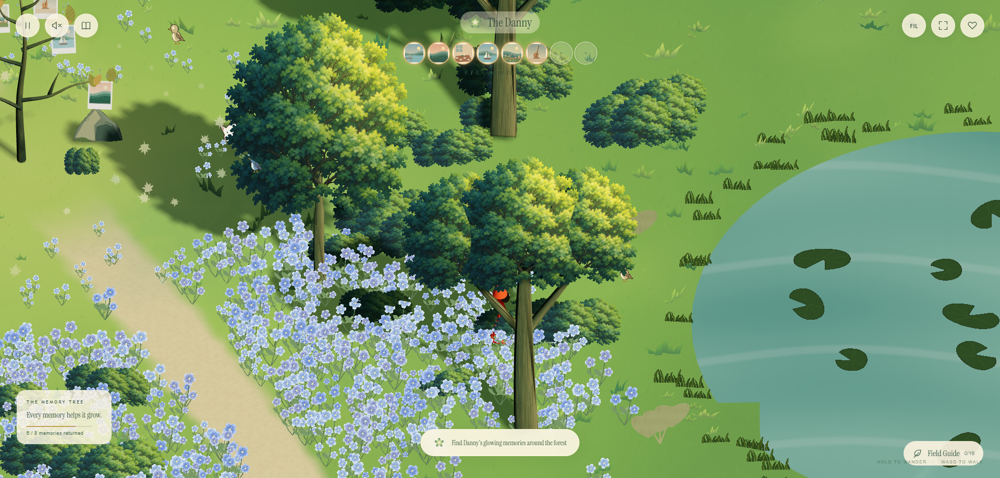
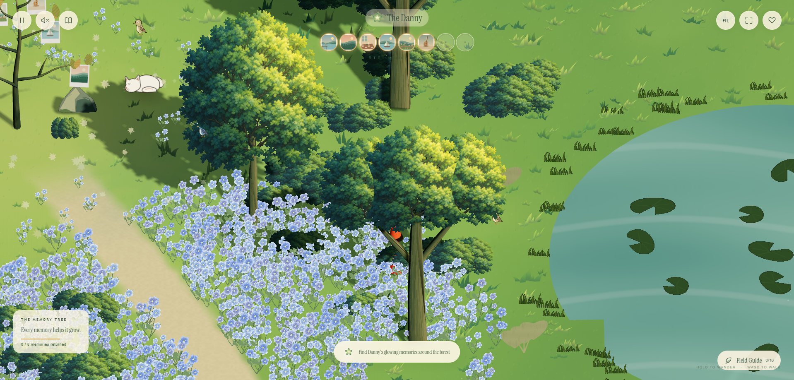
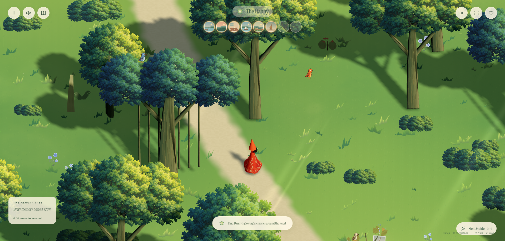
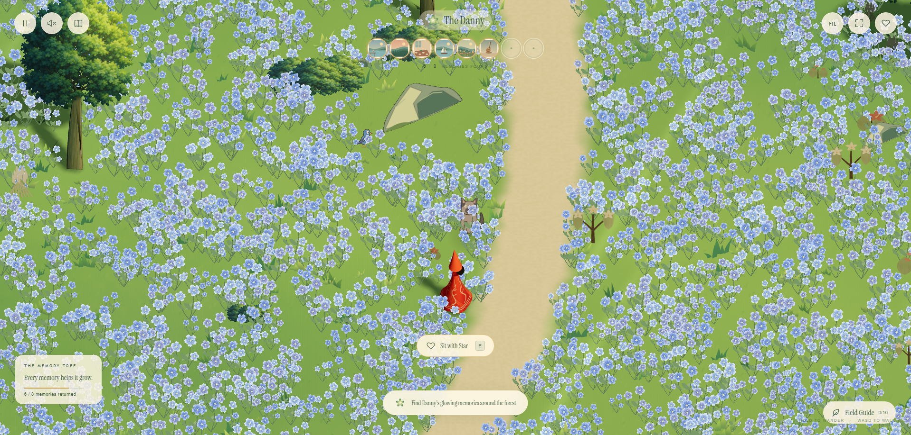
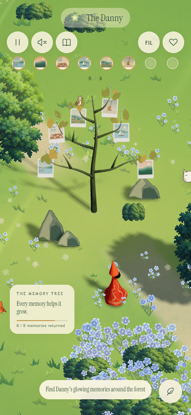

The trees stay whole
Trees and bushes keep their full shape when the traveler walks behind them. Foreground leaves and branches naturally cover the character. There is no opening that follows the character through the tree.
Previous openingFull tree

Low quality
High quality
Forest path
Blue flower meadow
Phone framing